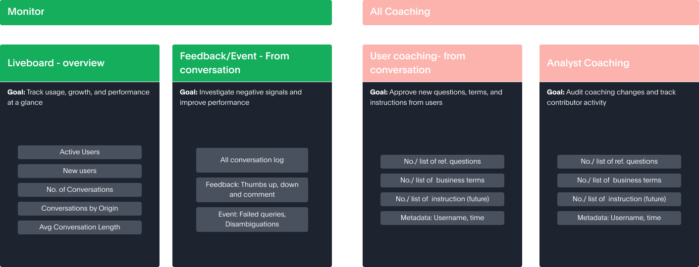

Designing a layer for analysts to “monitor” Spotter.
After Spotter — ThoughtSpot's AI analyst — goes live, the analyst who owns it loses sight of it. This is the story of giving them one place to see how Spotter is performing in the real world, and to act on what they find.
ROLE
Lead UX Designer
TIMELINE
▢ add dates
SCOPE
IA · Product Strategy · End-to-end UX
SPEAKER NOTES
Open on the reframe: Spotter is ThoughtSpot's flagship AI feature, but the person responsible for its accuracy goes blind the moment it ships. Monitoring is the layer that closes that loop. Keep the hook to one breath, then move into who Spotter is and why the gap matters.
Context
What is Spotter?
Spotter is ThoughtSpot's “AI Analyst.” Business users ask questions in natural language and get charts and insights from their data.
The analyst enables Spotter for business users.
The analyst is responsible for training Spotter for accuracy.
The problem
Once Spotter ships, the analyst has no visibility into how it's performing — no read on adoption or user satisfaction. They're left unsure whether it's working at all.
SPEAKER NOTES
Two beats. First, what Spotter is — an AI analyst that answers business questions in natural language, enabled and "trained" by a human analyst. Second, the gap: the analyst is accountable for accuracy and adoption, but after launch the feedback loop is invisible. The eye-off in the diagram is the whole problem in one glance.
Overview
Project details
Project brief
After Spotter's release, the analyst has no visibility into how it's performing — no way to judge adoption or user satisfaction — leaving them unsure whether it's landing.
My role
Led design and user research — from problem framing to the final experience.
Collaborated with PMs, engineering, and the UX team to define and refine the designs.
Final design output
Defined the IA for monitoring all Spotter activity in ThoughtSpot.
Designed the end-to-end experience for tracking, assessing, and refining Spotter. ▢ confirm wording
SPEAKER NOTES
Quick orientation slide for a reviewer: the brief in one line, what I owned (design + research end-to-end, plus cross-functional collaboration), and the two-part output — the information architecture for monitoring, and the shipped experience. The last bullet was cut off in your source; confirm the exact phrasing.
Framing the space
What does “monitoring” actually mean?
Monitoring is how you observe (track), assess, and continuously refine your AI assistant.
SPEAKER NOTES
Before designing anything, I defined the verb. Monitoring isn't a dashboard — it's a loop: observe what's happening, assess what it means, then act to refine. These three modes (track → assess → refine) became the backbone of every layout decision that follows.
Framing the space
The space where teams track Spotter after it goes live.
GOALS
Observe / TrackUnderstand how users are interacting with Spotter.
Assess / AnalyseIdentify failures, gaps, or coaching needs.
Action / RefineDecide what to update to improve accuracy and adoption over time.
WHAT MONITORING REVEALS
How Spotter is behaving in real-world usage.
What users are asking — and how well Spotter answers.
Whether the initial coaching (context, business terms, reference Q&A) is holding up.
When and where Spotter needs further coaching or fixes.
SPEAKER NOTES
This is the system view. The analyst first coaches Spotter (data model + setup). Then users interact with it. Monitoring watches that interaction through three lenses — track, assess, refine — and the refinements feed straight back into coaching. It's a closed loop, not a static report. The right-hand list is what that loop actually surfaces.
Audit · What exists today
Some visibility exists — but it's fragmented.
Analyst Liveboard
Key engagement & adoption metrics — as raw tabular data.
Read-only. No deep-dive, no actions.
Spotter coaching
Reference questions & business terms added by analysts and suggested by business users.
Low adoption.
MAPPING CURRENT USER JOURNEYS — VISIBILITY IS SCATTERED ACROSS 4 PLACES
LOCATION A
Enable Spotter
LOCATION B
Adoption Liveboard
LOCATION C
Coaching management
LOCATION D
Add coaching (chat)
SPEAKER NOTES
It's not that there's zero visibility — it's that the pieces are scattered. Metrics live in a read-only Liveboard, coaching lives somewhere else, enabling Spotter is somewhere else again, and adding coaching happens in chat. Four locations, no single place to see or act. That fragmentation is the real design problem.
Decision 1 of 3 — Defining scope
Two problems to solve at once.
THE STRUCTURE
Solve the IA — one pane of glass
Bring every scattered surface into one place.
Directly answers the fragmentation problem.
THE PROCESS
Solve the monitoring process
Choose the right signals to monitor.
Help the analyst assess what they're seeing.
Help them take a meaningful action on it.
SPEAKER NOTES
The first decision was framing the scope as two linked problems, not one. Structure: an information architecture that unifies the scattered surfaces into a single pane of glass. Process: the actual track → assess → act workflow inside it. Solving one without the other would have failed — a tidy IA with no workflow, or a workflow with nowhere to live.
IA Exploration · 1 of 4
Mapping the full product flow.
Laying out every monitoring touchpoint — tracking, assessment, and refine/action — across coaching input, user feedback, conversation logs, and the metrics Liveboard.
🗺
IMAGE — Full product flow (blurred OK)Export from Figma → save as portfolio/images/08-full-product-flow.png
SPEAKER NOTES
Step one of the IA work: map the entire surface. This board lays the three monitoring modes (track / assess / refine) against every input source. It's intentionally exhaustive — the goal here was to see the whole problem before deciding what to cut. Walk the reviewer through one column to show the depth, then move on.
IA Exploration · 2 of 4
Where user actions become analyst actions.
Tracing both sides of the loop: what a business user does in a conversation (feedback, thumbs, save) and how that surfaces on the analyst side as something to review and act on.
🔀
IMAGE — User ↔ Analyst flowExport from Figma → save as portfolio/images/09-user-analyst-flow.png
SPEAKER NOTES
The key realization: most signals start on the user side (a thumbs-down, a saved chat, a comment) but the actionable response lives on the analyst side. Some objects are insight-only (a Liveboard), others are directly actionable (coaching). Mapping which is which told us where to put actions versus where to just surface information.
IA Exploration · 3 of 4
Grouping signals into features.
Clustering the mapped signals into four candidate features — Liveboard overview, User-feedback Action Center, Review user coaching, and the Analyst Coaching Tracker — each tied to track, assess, or refine.
🧩
IMAGE — Feature groupingsExport from Figma → save as portfolio/images/10-feature-groupings.png
SPEAKER NOTES
From a messy map to four coherent features. This is where the IA starts to feel like a product: each cluster has a clear job — overview to track, Action Center to investigate, coaching review to approve, tracker to audit. The annotations on the right call out where growth and coaching signals originate.
IA Exploration · 4 of 4
Two ways to structure it — Option A vs Option B.
Pressure-testing two information architectures for the same feature set before committing — one flatter, one with a dedicated “Monitor / Configure Spotter” container and explicit access levels.
⚖️
IMAGE — IA options: Option A vs Option BExport from Figma → save as portfolio/images/11-ia-options-ab.png
SPEAKER NOTES
I never present a single option as inevitable. Here are two structures for the same features — A keeps things flatter; B introduces a dedicated monitor/configure container with explicit user-vs-analyst access. Comparing them out loud (ownership, scalability, access control) is what made the eventual choice defensible.
Decision 2 of 3 — Scope for V1
Limiting scope for V1.
We deliberately constrained the first version — to ship the monitoring capability fast and to avoid over-investing in an area that was still moving.
Urgency of the project
V1 would give us enough feedback to expand monitoring in the next phases.
Positive pressure from the team to ship the monitoring capability faster.
Uncertainty of manual coaching
We weren't sure yet how large the coaching flow would become.
Discussions about “Memory” — a new form of coaching — meant we were unsure how much to invest here.
SPEAKER NOTES
Senior signal: knowing what not to build. Two reasons we capped V1. One, urgency — shipping sooner gets real feedback that de-risks later phases. Two, uncertainty — the coaching surface was about to change with "Memory" (the sibling project), so over-designing coaching now would have been wasted. We scoped to learn, not to be complete.
Architecture
Basic IA at the data-model level.
The structure underneath: a Monitor group (Liveboard overview, feedback from conversation) and an All-Coaching group (user coaching, analyst coaching) — each with its tracked metrics and signals.

🏗
IMAGE — Basic IA (data-model level)Export from Figma → save as portfolio/images/13-basic-ia-data-model.png
SPEAKER NOTES
This is the concrete IA at the data-model level: Monitor (overview + conversation feedback) on one side, All Coaching (user-sourced and analyst-sourced) on the other, with the specific signals each one tracks — active users, conversation counts, reference questions, business terms. This is the skeleton the shipped screens hang on.
Decision 3 of 3 — Where monitoring lives
Monitor per data model, or one central level?
Monitor at each data model
Each data model gets its own Spotter monitor page.
PROS
Ease of management — data & monitoring sit at the same level.
Better security — access scoped to that data model's admin.
CONS
Doesn't scale for anyone managing adoption across many data models.
Not future-proof — the page clutters as monitoring grows.
VS
✓ CHOSEN
Monitor at a central level (across data models)
A single pane of glass for all data models.
PROS
Scalable for more features.
Maps signals across data models — better insight.
One place for all Spotter activity across ThoughtSpot.
CONS
Enabling Spotter is still controlled from the data model — monitor sits on a different page.
SPEAKER NOTES
The pivotal architecture call. Per-model monitoring is easy to manage and naturally secure, but it collapses the moment one analyst owns several data models — and it doesn't scale as we add features. The central "one pane of glass" wins on scalability and cross-model insight. The one tradeoff we accepted: enabling Spotter stays on the data-model page, separate from monitoring.
The call
One monitor, across all data models.
The chosen approach: an account/admin-level monitor that spans every data model (✓), rather than a separate monitor buried inside each one (✕).
🎯
IMAGE — Chosen approach: one central monitorExport from Figma → save as portfolio/images/15-monitor-central-approach.png
SPEAKER NOTES
The decision visualized. Green = the chosen account/admin-level monitor that sits above all data models; red = the rejected per-model monitoring buried in each data workspace. Coaching and setup stay collaborative at the data-model level, but the monitoring lens lifts up to one central place. This is the spine of the shipped product.
V1 Scope · What we shipped
Decided flows to solve for V1.
Metric Liveboard
Study data-level signals in a dashboard.
Customised org to org — so we just had to add the page for the Liveboard.
Monitoring all user conversations
“As an analyst, I want to review all user conversations in one place — so I can spot problematic interactions, investigate feedback or drop-offs, and take direct action like adding coaching, without switching tools or relying on static dashboards.”
SOLVE UX FLOWS FOR
Finding the right conversation.
Assessing the conversation.
Taking action.
SPEAKER NOTES
What V1 actually committed to. Two flows. The metric Liveboard was relatively cheap — orgs customise it, so we just gave it a home. The real design work was monitoring conversations: one place to find a problematic conversation, assess what went wrong, and act on it directly. Those three sub-flows — find, assess, act — are the heart of the shipped experience, and where the next slides should go deep.
Shipped · Flow 1 — Finding the right conversation
"All chats" — 500 conversations. The right one in two clicks.
📋
IMAGE — All chats (shipped)Export from Figma → save as portfolio/images/17-all-chats.png
LOCATION
Lives under Monitor Spotter → All chats in the Data Workspace nav — the central monitoring surface chosen in Decision 3.
KEY DESIGN DECISIONS
Table, not cards — analysts scan across 500 rows; a table lets them filter and sort without opening anything.
Signal columns at a glance — follow-ups, thumbs up/down count, feedback category, model, and author visible before clicking in.
Filter by model — an analyst managing multiple data models stays in one place and filters down.
THE PROBLEM IT SOLVES — Instead of trawling through individual chat logs in Spotter, the analyst sees all conversations with quality signals surfaced at the list level.
SPEAKER NOTES
The first shipped flow: finding the right conversation to investigate. The table shows 500 conversations with feedback signals already visible — thumbs down count, feedback category, follow-ups — so the analyst doesn't have to open anything to know where to look. Model filter lets them stay in one place across their whole data model portfolio. The design decision that mattered most: a table over cards, because at 500 rows you need to scan, not browse. And every column earns its place — no "nice to have" columns; each one is a signal the analyst uses to decide what to investigate next.
Shipped · Flow 2 & 3 — Assessing and acting
Open a conversation. See the failure. Fix it — without leaving.
💬
IMAGE — Conversation detail (shipped)Export from Figma → save as portfolio/images/18-conversation-detail.png
WHAT THE ANALYST SEES
The full conversation thread — including the chart Spotter generated.
The downvote bubble surfaced in context, right below the failing answer — with category tags and the user's comment.
WHAT THEY CAN DO
+ Add to coaching — inline action on the answer that failed, without switching context.
Read the user's exact comment ("Answer is not showing accurate data") before deciding what coaching to add.
THE CORE DESIGN PRINCIPLE
Feedback is evidence, not noise. By surfacing it inside the conversation it came from, the analyst understands the failure in context — not in a detached report — and can act immediately.
SPEAKER NOTES
The second and third flows collapsed into one screen: assess and act. The conversation detail modal shows the full thread — so the analyst reads the exact exchange that failed. The downvote appears right below the answer that triggered it, with the category the user chose and their written comment. Then "+ Add to coaching" is right there, attached to the specific answer. The insight: if you separate the failure from the action, the analyst has to hold context in their head. By surfacing feedback in-context and putting the fix action right there, you reduce cognitive load and remove the motivation to defer. This is the "no switching tools" promise from the brief, delivered.